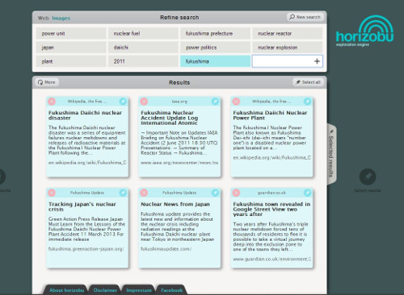
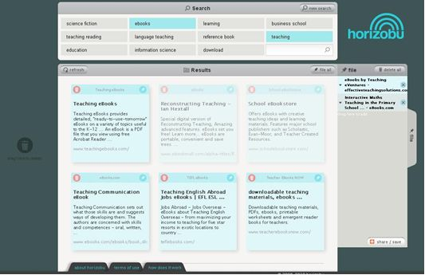
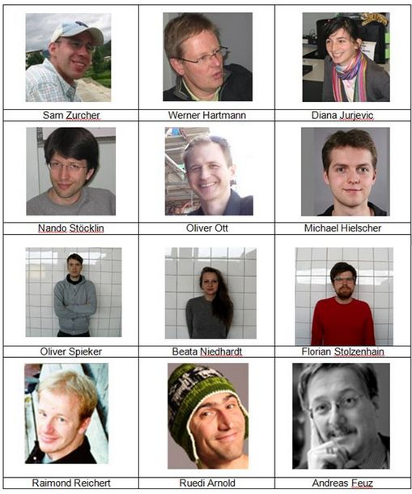

We would like to describe the ideas and concepts behind the experimental search and exploration engine horizobu. The goal of the documentation is to make the experience and knowledge gained accessible to a wider audience.
Started in 2008 as an experimental search engine, horizobu provides search and exploration services based on algorithmic and social community concepts with special focus on the organization and sharing of search results. Automatic and semantic suggestions for the refinement of search queries make horizobu especially well suited for mobile devices.
An excerpt from the project description from 2010:
Starting with only a few search terms, horizobu suggests additional search terms and with a few mouse clicks, you will find what you are looking for. Instead of providing thousand of results, horizobu will show you a limited number of relevant results. Unlike common search engines, you can delete irrelevant results, save relevant results and share these results with friends. horizobu is a hybrid search engine based on well known algorithmic concepts and new community concepts. horizobu helps you to find and discover information. horizobu is different from common search engines in several aspects:
- horizobu widens your horizon and offers new surprising insights.
- horizobu assists you in refining your search and reduces the chance of missing important information.
- horizobu interacts with you in your language and assists you in making correct choices.
- horizobu offers a new search engine interface paradigm and allows you to collect and self-manage your results.
- horizobu invites you to share your search experience with your friends all over the world.
In the summer of 2014, the experimental project horizobu has come to an end. Besides the development of the system that is powering horizobu, we have as well executed an evaluation study with 75 people. We investigated whether the suggested tags are really helping the users to refine their search queries. The study showed that users with good to high information retrieval skills are better supported by horizobu compared to traditional search engine such as Google. Users with lower information retrieval skill preferred the significantly simpler user interface of Google and are not worried about information that they will possibly miss. Horizobu’s sharing feature was rarely used. It seems that it takes time for users to understand that sharing of a search process can be beneficial to them and their peers.
The idea on which horizobu is based on was developed in 2008 based on an analysis of the major flaws of the existing information retrieval systems such as Google. The following two flaws were identified:
- Search engines such as Google have access to more and more information. The results presented to the users are customized based on geographic location, data from social networks, search history, and other user-specific factors. This leads to search results that are better tailored towards the need of the individual user. Said differently, the user sees only information that reinforces his own opinion; contradicting information is filtered out and therefore the user is presented only a partial picture.
- For a long time, the information retrieval research community has identified users as the bottleneck. Often, users are using an insufficient amount of query terms or query terms that are not specific enough. As a consequence, search engines have often not enough information to define a result set that is relevant for the user. Even though there has been a lot of progress in the area of search engines, search engines are not getting into a conversation with their users.
The idea of horizobu is to not only return precise results but rather show as well related topics that might be interesting and relevant for the user. Therefore, horizobu is not a traditional search engine but rather an exploration engine. The user should not be required to think deeply about which search terms to use but rather start a conversation with horizobu. In a later stage, horizobu was extended to allow sharing of search results and therefore enabling a collaborative search process.
The most commonly used methods for providing access to a collection of information are based on two principles. Firstly, the categorization of information by experts (e.g. libraries) and secondly, the use of an algorithmically generated index (e.g. traditional search engines such as Google). Systems based on categorization use a centralized approach. Subject experts determine which keywords and categories are to be used. The categories provided by e.g. Yahoo are an example for such a system. To a certain degree, information available on wikipedia is as well categorized by subject experts. An advantage of a system based on categorization is that a subject expert has checked the content of a document and has assigned a categorization based on human brain power. But at the same time, this approach can as well be a disadvantage. Subject experts, e.g. librarians, will categorize documents based on their subject knowledge and often use subject specific terms. In order to be able to use such a categorization, the user has to have knowledge of the subject specific knowledge that the person creating the categorization, e.g. the librarians, has. Based on that observation, horizobu is using the tagging of content by users done on Web 2.0 services; amongst others data from services such as YouTube, flickr, or delicious. Users will use their language to tag content and are therefore closer to the normal search engine user than e.g. a librarian. During the development of horizobu, we designed and executed a study which showed that user generated tags are highly relevant for information retrieval. There is high probability that a tag of a relevant document is matched by a query term. Firstly, because tags are often not in a subject language but rather in the language used by a user in her daily life. Secondly, for many social tagging services, there are many tags available for a single piece of information. One such example are books: A classic library index will contain only a couple of keywords whereas the same book will be tagged with many different keywords in a service such as LibraryThing.
horizobu basically used the query terms as tags to retrieve information from social tagging services such as YouTube, delicious, or flickr. horizobu considers at the same time result pages and checks whether those pages have been tagged in social tagging systems. Amongst others, those tags are then used to provide suggested search terms to the user which he can then use to refine her search query.
horizobu is as well using the publicly available wikipedia data. horizobu generates a set of tags for every wikipedia page; as an example the tags for the wikipedia page http://en.wikipedia.org/wiki/G_sharp_major. Those tags are e.g. based on markup such as titles or bold text, on meta data of images or on external links. horizobu analyses as well the relationship between different wikipedia pages; e.g. two pages linking to each other are likely to be semantically related and therefore the concepts represented by the two pages are connected. Further, wikipedia disambiguation pages are playing an important role. The relationships presented by disambiguation pages can be used for the exploration part of horizobu; horizobu suggests query terms that are related to other aspects of the initial query and therefore starts a dialog with the user. Wikipedia articles contain external links which are, in most cases, carefully selected and contain relevant high quality information. horizobu is using those links and increases the relevance of those pages and their associated information accordingly. Compared to the PageRank algorithm, horizobu puts more emphasis on the semantic tagging by the users and less on the popularity of a web page.
Algorithmic search engines such as Google are based on an full text index. For every given document, more or less all words are put into the index. Therefore, the index is seemingly complete and it looks as if such an index is better than a folksonomy. The completeness of the index can at the very same time be a disadvantage. Even though a word might occur in a document, it might not be a accurate description of the document. And there are many words, such as generic terms, that are not occurring in a document and are therefore not contained in a full text index. Tagging could be seen as a manual way of creating an index. Contrary to a full text index, the words in the index are created by humans. There will be less words in the index but most of those words will have a higher descriptive value. Additionally, generic terms and terms commonly used in a subject area will as well be part of the index created by a folksonomy. Even though a folksonomy of a social bookmarking service might be relatively small in size compared to a traditional index, it can still be better than a traditional full text index. As a consequence, horizobu is based on both a traditional algorithmic search based on a full text index and a folksonomy created by the communities of social bookmarking services. horizobu is using Yahoo BOSS as the algorithmic part of the search process and web 2.0 services such as flickr, YouTube, and wikipedia for the folksonomy part.
horizobu uses new principles as well for the ranking and the presentation of the results. There are many studies showing that users are only looking at the first couple of results. Therefore, it is explicitly our goal to not provide 1000 hits but rather restrict ourselves to 50 results per query. In order to improve the ranking of the results, we consider as well behavior of users on horizobu. Such behavior can be visiting of results, saving results for sharing or deleting of irrelevant results. Further, the ranking is adapted based on popularity on social services or when being mentioned as a link on wikipedia.
horizobu’s aim is to start a conversation with the user. For each search query, horizobu is generating approximately 3000 tags. horizobu is selecting about a dozen tags out of those 3000 tags using the TagRank algorithm. The selected tags are then offered to the user as possible refinements for her search query. As a result, the user doesn’t have to invest a lot of time in carefully selecting her search terms but can rather start a conversation with the search engine and iteratively and interactively refine the query. The picture below shows the tag cloud for the query ebooks teaching.
By using context-based suggestions for possible search terms, horizobu is informing the user about other relevant contexts of a search query. These contexts are often not mentioned in the case of precision oriented search processes. Therefore, horizobu is not only helping with search but as well expanding the horizon of the user. This is especially relevant whenever the user doesn’t know what he doesn’t know.
Most currently used search engines show the results in a fixed ranking which cannot be modified by the user. It’s neither possible to remove result nor save individual results for later use. From a usability point of view, a fixed ranking is contrary to how we search and select items in our daily lives. When looking through the mail, looking at vacation catalogues, or buying new glasses, we sort the items into two categories: good and bad. Vacation catalogues for destinations that we are not interested in are thrown into the paper pin immediately. Catalogues of destinations that might be relevant are put aside for later consideration. We repeat this procedure iteratively until we have found the destination of our liking. horizobu’s user interface is based on this paradigm: search results can be deleted or put onto a pin wall so that they can looked at again later. A user can further save a pin wall for later use or for sharing with other users.
It was not the goal of the horizobu team to be in competition with Google. Our priority was to explore new approaches in information retrieval. We are convinced that the quality of the tag suggestions and the results could be improved substantially with additional resources.
The implementation of horizobu consists of two parts. Firstly, an offline extraction and calculation of tags and secondly, a system to support user requests in real time.
Data Extraction and Calculation
The intelligence of horizobu is based on semi structured information retrieved from social information systems. Some of those systems provide APIs to retrieve that data, e.g. flickr or youtube, so no data extraction and calculation is necessary.
For Wikipedia on the other side, only the raw data is available and the relevant information has to be extracted. We extensively extracted information from the raw Wikipedia source for several language versions, e.g. for every page:
- bold words
- italic words
- words contained in the name of the page or in one of the titles
- image names
- words used in links pointing to a page
- words used in category links
Every extracted tag is assigned a normalized weight which is based on several properties of the page.
The extraction is implemented with the help of Hadoop and is run on AWS with the raw wikipedia source on S3. The computation runs for several hours using a smallish Hadoop cluster. As output, the extraction writes for every wikipedia page a small file to S3. The file name is a hash of the normalized page name of the wikipedia page. The file itself contains all computed tags including weights and from which source (e.g. bold or title) the tags are calculated. An example of such a file can be found at [TODO link to such a file].
Real Time User Request System
This system is responsible for serving all the information for users using horizobu.com. It consists of four parts:
- Static Frontend
- Dynamic Frontend
- Backend
- Session storage and caching
Horizobu is hosted on AWS and each of those logical parts is deployed to a separate machine. For each part, at least one machine is needed but the system is designed in such a way that it can be horizontally scaled for each part. The JavaScript is implemented with Google Closure Library and JQuery. Both the backend and the frontend are developed in Java and running in a Tomcat container.
Static Frontend
The static frontend is the only machine reachable from the internet and is responsible for serving static resources such as images, CSS, or JavaScript using nginx. Further, it proxies any dynamic requests to the dynamic frontend.
Dynamic Frontend
The dynamic frontend is responsible for requesting the calculation of the data from the backend and enhancing and transforming that data based on logic that is session and presentation dependent. One such transformation is to make sure that tags in the tag cloud are ordered in a consistent way across multiple search requests in the same session.
The user session consists only of an identifier and all relevant information about the user context is requested from the session storage and caching layer. E.g. the last seen tag cloud is stored in this session storage layer.
The frontend can be scaled horizontally as no user information is stored in the frontend itself.
Backend
The backend is responsible for retrieving the raw data and calculating both the tag cloud and the results from it. The raw data is retrieved from multiple services in parallel. Yahoo BOSS is called several times with different filters and the results are used both for the result calculation and as an input for the tag calculation. Several social information systems are queried for tags and links and tags and links from the previously extracted wikipedia data is as well used. The results are weighted and combined and a ranking is defined. The tags are as well weighted based on several factors and then reduced to a tag set of around 40 tags making sure that we have a diverse set of tags.
The backend is completely session independent and returns both tags and results independent of the user. The backend can be scaled horizontally and it is made sure that for a specific user query, always the same backend is queried and therefore local caches can be used.
Session Storage and Caching Layer
Based on memcached, stores both session information and caches requests to external services. Key schema designed in such a way that it can be scaled horizontally.
Werner Hartmann and Sam Zurcher have known each other for a long time. They first met in 1997 at High School Baden where Werner Hartmann was a math teacher and Sam Zurcher was a student. They then met again at the Swiss Federal Institute of Technology in Zurich where Werner Hartmann was a professor for computer science and Sam Zurcher was a computer science student. Sam Zurcher studied at UNC Chapel Hill for a year, was an intern at Google in Mountain View, CA, and spent a year working as an ICT consultant in the Himalayan Kingdom of Bhutan. In 2008, they met again. The idea behind horizobu was born during a dinner at a local pizza place. A couple of emails later, the idea started taking shape and a first very basic prototype followed soon after. A bit later, a second prototype followed and made use of publicly available cloud infrastructure. The second prototype was used to convince people and soon our team had grown to more people; among them somebody with a lot of knowledge in the area of the wikipedia.
In fall 2009, three young designers from Berlin joined the team and in the beginning of 2010, horizobu was joined by a lawyer who was taking care of the legal side of things. Approximately a dozen people have been working since then in their free time on horizobu. A German beta version went online in fall 2010 and has been continuously improved since. In summer 2014 the experimental project horizobu has been closed.
References
- Explore horizobu together with Christopher Columbus (Promotional video)Graphic Design by F.U.K. laboratories Berlin, www.fuklab.org. Sound Design by ZOLTON (Zofia Morus), After Effects by Martin Rettschlag.
- Promotional Flyer
- Eignung von Social-Tagging-Systemen für die Informationssuche im Internet, Jurjevic D., PHD thesis Universität BW München, 2013.